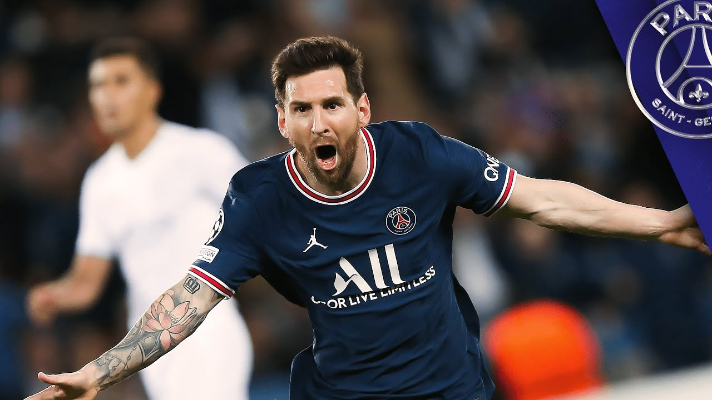
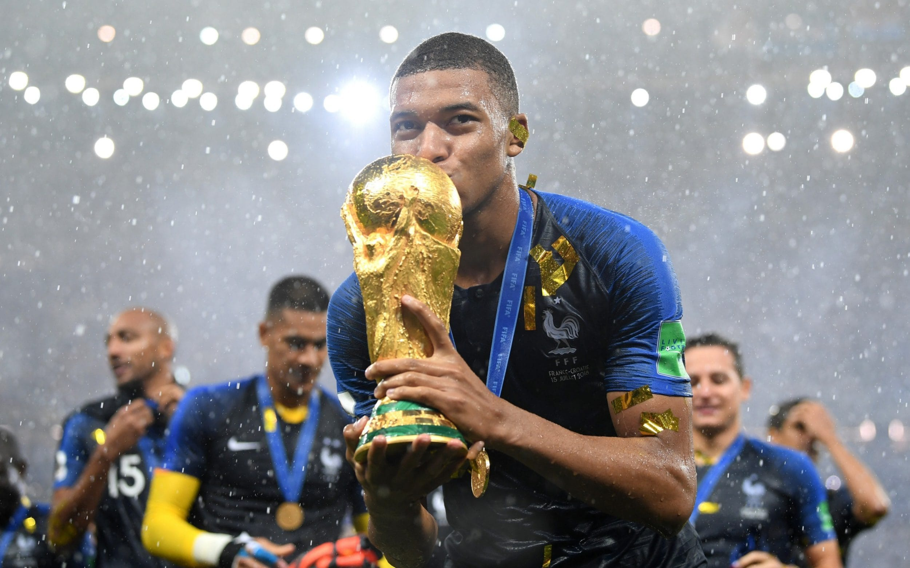
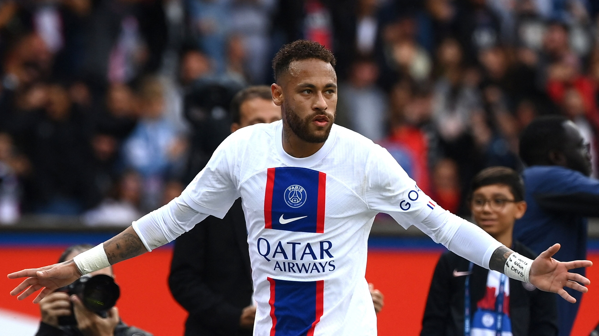
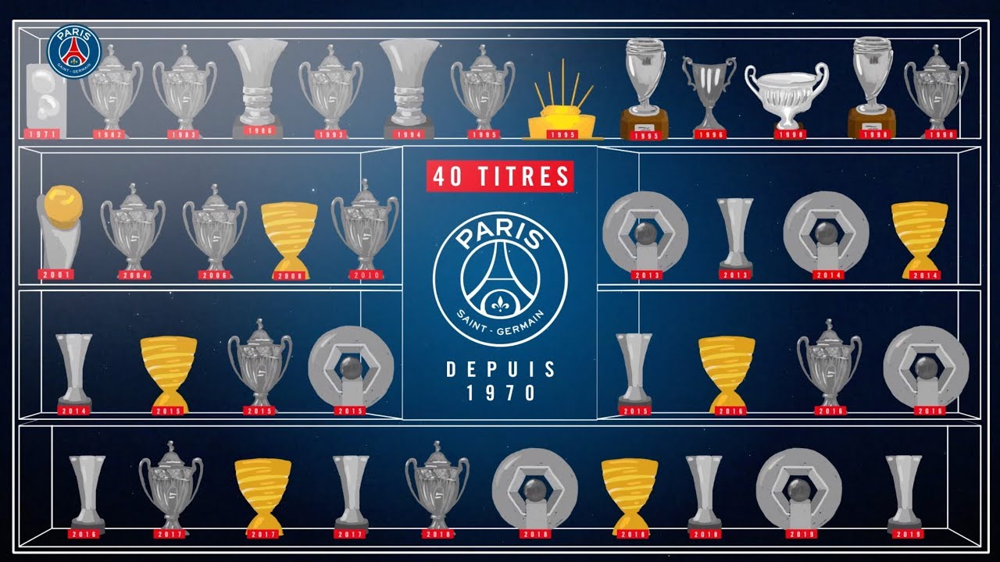
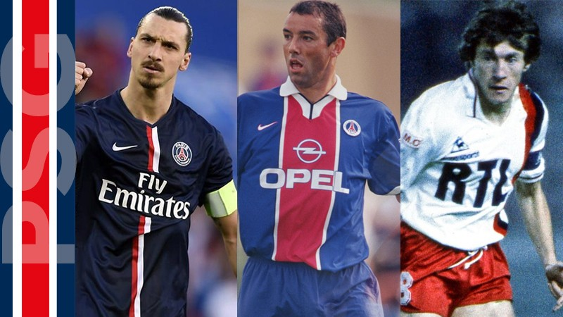
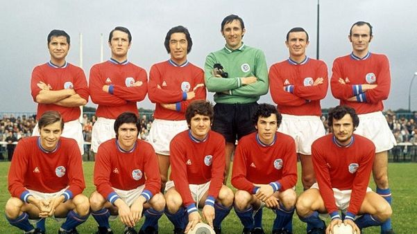
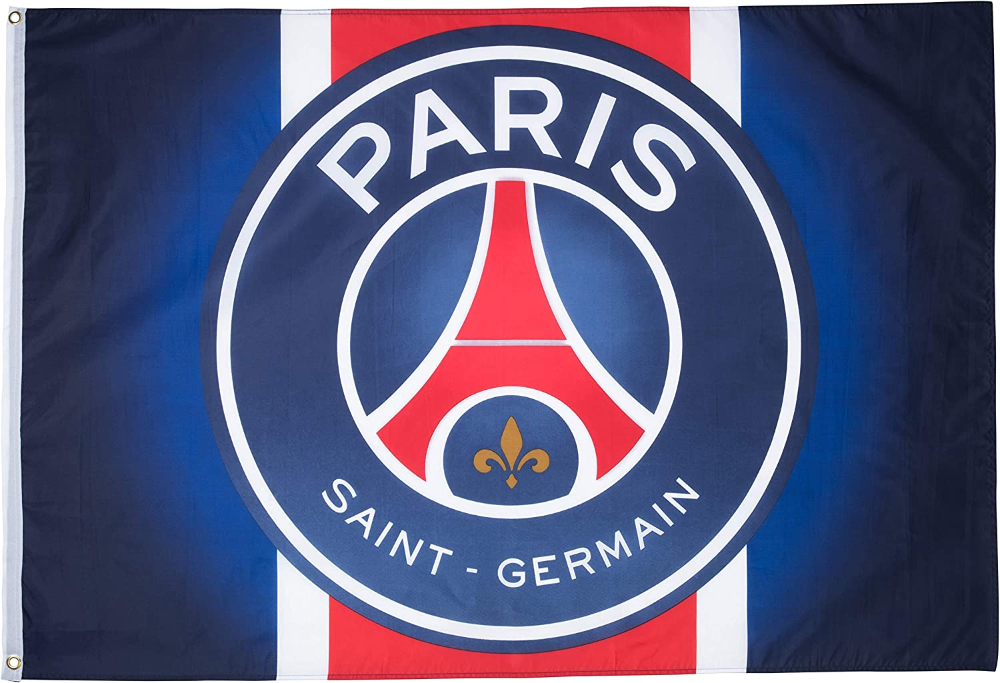
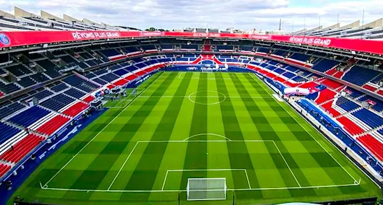
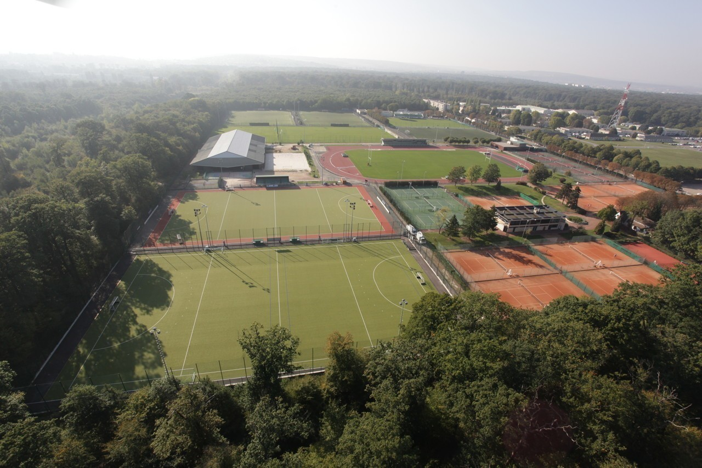

Best Current Players Trophies History Identity Best all-time players
Messi is considered the best player of his time and is known worldwide. He is an Argentinian player who plays as a forward best known for his performance on his last team Barcelona, being awarded best player in the world many times. Messi has a record of seven Ballon d'Or awards, six Europen Golden shoes, and in 2020 was named to the ballon d'or dream team. 
Mbappe is Frenchmen that is also a forward for PSG. He is one of the fastest players in the world, and scores the most goals for the team. He has shocked many people because he's been so good at such a young age. Currently, Mbappe is 23 years old. His most notorious feat was winning the world cup in 2018, the first teenager to score in a World cup final since 1958. The only other teen to do so was Pele who is widely regarded as the greatest player ever. 
Neymar is a Brazillian player known for his skills and flashy tricks on the field. Being able to play as a winger, center forward, second striker, and offensive midfielder on occasion. Neymar is recognized as one of the top players in the world because he is a prolific goal scorer and well-known playmaker. He is the most entertaining player to watch who always has a trick up his sleeve, and has played with his current companion Messi on a previous team Barcelona. 
PSG are the record holders of all nation competitions, having ten Ligue 1 champions, 14 Coupe de France, nine Coupe de la Ligue, and eleven Trophee des Champions. They unfortunately have yet to win a Champions League title also known as the UCL. The closest they got was in the semi-finals vs Real Madrid where they ended up having a devastating loss. Cristiano Ronaldo was a player for Real Madrid considered by many the greatest ever to play. Unfortunately for many Madrid fans Ronaldo transferred to Juventus and is currently playing on Manchester United the team he originally played on when he became a pro. The image below is how many trophies PSG has won so far 
There have been many famous players playing for PSG. These players have their names in the history books, for their impact not only upon the team but on the fans as well. You may know many of these players as they are famous in, and in some cases out of the soccer the world. To learn more about these players this link will inform more about their accomplishments, and who they are. 
For a long period of time, Paris did not have a football club that belonged to them. This changed when a couple of businessmen thought out the plan of merging Paris FC and Stade Saint-Germain into a single club that would be named Paris Saint-Germain. (The year of establishment is somewhat debated because the club was affiliated with the Federation Francaise de football already in December 1969) 
Since the creation of the club PSG has represented the city of Paris and the neighbouring royal town of Saint-Germain-en-Laye. This resulted in the club's traditional colours being red, blue, and white. Red and blue are Parisian colours, and white is a symbol of French royalty and Saint-Germain-en-Laye. On the club's logo, the Eiffel tower in red and blue represents Paris, and the fluer de lys is a royal symbol being related to Saint-Germain-en-Laye. 
The first game PSG ever played was at their current home stadium Parc des Princes which contains 47,929 seats for the viewers. Their first game was for promotion to Ligue 1 which is the biggest, and most iconic league in France. The team moved into the pitch upon its promotion to Ligue 1 in 1979. During the early years of the team, PSG played on several grounds which include Stade Municipal Georges Lefèvre and Stade Jean-Bouin. 
The Camp des loges located in Saint-Germain-en-Laye has been PSG'S training ground since 1970 when PSG joined Ligue 1 This will soon come to end as there is a new training ground in progress named Paris Saint-Germain Training Center will replace the current one upon its completion in June 2023. Return to the top 